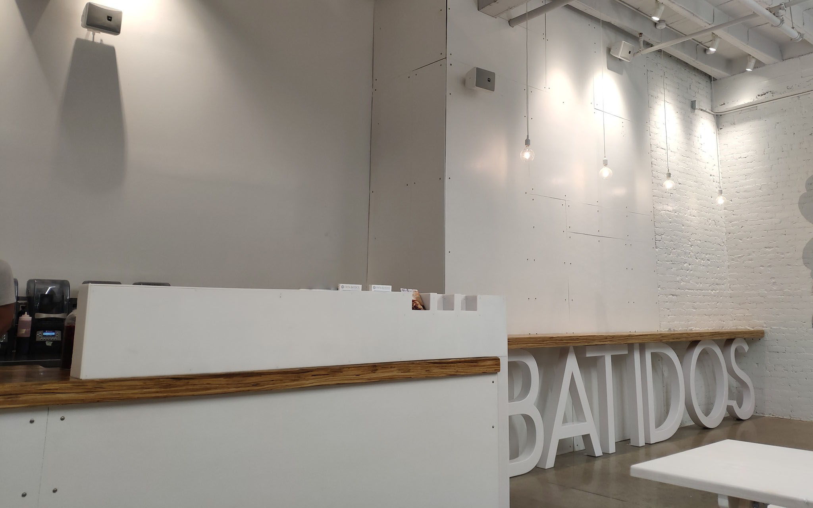

Ann Arbor
117 W Washington St, Ann Arbor, MI 48104
Mon–Thu & Sun · 11AM–11PM · Fri–Sat · 11AM–12AM
(734) 761-2882Cuban-style chorizo burger, shoestring fries on top, a batido in the other hand. Ann Arbor's Best Burger eleven years running.
Chorizo, beef, chicken, black bean, or whitefish — tucked into a soft egg bun, crowned with crispy shoestring fries, finished with melted Muenster from Great Lakes dairy. The shoestring fries on top are the signature. That's the frita.
All chicken and beef is certified Halal.
"The best (Cuban) burger isn't in Miami, it's in Ann Arbor. This is one of the best burgers possible!"— Ali Khan, Cheap Eats (Cooking Channel)
A Top Chef Season 6 alum, Eve opened Frita Batidos in 2010 after years running Eve the Restaurant in Kerrytown. She's a longtime Slow Food advocate and a Michigan-first cook.
"We strive to source our meat, cheese and produce from Michigan or the Midwest whenever possible."
A second location opened in Detroit. The newest: Brooklyn.
"If there's one restaurant you won't want to miss, it's Frita Batidos, a Cuban restaurant in the heart of downtown Ann Arbor."— Intelligent Travel, National Geographic
"To find a good burger, see where students are eating. The Cuban-style spot is a college-town favorite."— USA Today
"Frita Batidos is firing on all the current trend cylinders, from the fast casual, order-at-the-counter service style and the clean, modern decor to the Latin-linked flavors and value messaging."— Ron Ruggless, Nation's Restaurant News

117 W Washington St, Ann Arbor, MI 48104
Mon–Thu & Sun · 11AM–11PM · Fri–Sat · 11AM–12AM
(734) 761-288266 W. Columbia, Detroit, MI 48201
See location page for current hours
See location for address
"Best New Burger NYC" — The Lo Times
All chicken and beef at Frita Batidos is certified Halal. The chorizo frita, beef frita, and chicken frita all qualify. Vegetarian options include the Black Bean Frita, Plantain Chips, Mexico City Corn, and Crisped Plantains.